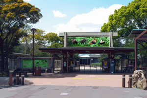

ソシオ・ズーは
ネット上の仮想動物園です

アニマル・インタープリター
動物の想いを感じ取れる能力を持った「アニマル・インタープリター」になって、動物の声なき声を聞き、絶滅の危機に瀕する動物を救うアクティビティ。
クイズに正解すると、動物を絶滅を救うヒントがもらえる。移動時間に考えてもらうことで、獣舎間が離れている園でも、移動時間を学びの時間にかえることができます。
音声ガイド（テスト運用中）
スマホの読み上げ機能を使うことで、通信費用をほとんどかけずに、来園者に音声ガイドで提供することができます。
移動時間にきいてもらうことで、獣舎間が離れている園でも、移動時間を学びの時間にかえることができます。
歩行ラリー（工事中）
自動車競技のラリーのように、地図ではなく最小限の情報がかかれた「コマ図」といわれる指示図をみて、ゴールを目指すので、園内をよく観察することになります。
字が読めないお子様も、コース探しに自律的に参加できます。途中にチェック・ポイントのクイズなどを設定し、コース毎の学びを深めることもできます。コースを制覇するごとにデジタル・バッジなどの報酬がもらえるようにしてもしてもいいでしょう。
SOCIO ZOOの冒険（工事中）
ソシオ・ズーの動物たちの仲間が絶滅の危機に！ クイズに答えて動物たちを救う方法を考えよう！
園内の動物たちがヒントをくれるよ。
動物園を作ろう（工事中）
あなたは新しくつくる園長に選ばれました。飼育する動物のエサの自給自足を考えています。どれぐらいの農地や森林が必要かを考えて、素敵な動物園を作りましょう。獣舎に行くとヒントがあるよ。